Single Simulate Dense
Single Dense Simulation to See policy functions clearl
Contents
Simulate Set Parameters Defalt
clear all; close all; it_param_set = 8; [param_map, support_map] = ffs_ipwkbzr_fibs_set_default_param(it_param_set);
Simulate Set Parameters Dense
st_param_which = 'dense'; if (ismember(st_param_which, ["default"])) % support_map('it_display_every') = 10; param_map('it_maxiter_val') = 40; elseif (ismember(st_param_which, ["dense"])) support_map('it_display_every') = 1; param_map('it_maxiter_val') = 40; param_map('it_w_perc_n') = 200; param_map('it_ak_perc_n') = param_map('it_w_perc_n'); param_map('it_coh_bridge_perc_n') = param_map('it_w_perc_n')/3; param_map('fl_coh_interp_grid_gap') = 0.02; param_map('it_c_interp_grid_gap') = 10^-4; param_map('fl_w_interp_grid_gap') = 0.02; param_map('it_z_wage_n') = 7; param_map('fl_z_r_infbr_n') = 5; param_map('it_z_n') = param_map('it_z_wage_n') * param_map('fl_z_r_infbr_n'); end
Simulate
ff_ipwkbzr_fibs_ds_wrapper(param_map, support_map);
Elapsed time is 2395.229343 seconds.
----------------------------------------
----------------------------------------
xxxxxxxxxxxxxxxxxxxxxxxxxxxxxxxxxxxxxxxx
xxxxxxxxxxxxxxxxxxxxxxxxxxxxxxxxxxxxxxxx
Begin: Show all key and value pairs from container
CONTAINER NAME: SUPPORT_MAP
----------------------------------------
Map with properties:
Count: 48
KeyType: char
ValueType: any
xxxxxxxxxxxxxxxxxxxxxxxxxxxxxxxxxxxxxxxx
xxxxxxxxxxxxxxxxxxxxxxxxxxxxxxxxxxxxxxxx
----------------------------------------
----------------------------------------
pos = 34 ; key = st_img_name_main ; val = ff_ipwkbzr_fibs_vf_vecsvff_ipwkbzr_fibs_ds_wrapper_default
pos = 35 ; key = st_img_path ; val = C:/Users/fan/CodeDynaAsset//m_fibs//m_ipwkbzr_solve/img/
pos = 36 ; key = st_img_prefix ; val =
pos = 37 ; key = st_img_suffix ; val = _p8.png
pos = 38 ; key = st_mat_name_main ; val = ff_ipwkbzr_fibs_vf_vecsvff_ipwkbzr_fibs_ds_wrapper_default
pos = 39 ; key = st_mat_path ; val = C:/Users/fan/CodeDynaAsset//m_fibs//m_ipwkbzr_solve/mat/
pos = 40 ; key = st_mat_prefix ; val =
pos = 41 ; key = st_mat_suffix ; val = _p8
pos = 42 ; key = st_mat_test_path ; val = C:/Users/fan/CodeDynaAsset//m_fibs//test/ff_ipwkbzr_ds_vecsv/mat/
pos = 43 ; key = st_matimg_path_root ; val = C:/Users/fan/CodeDynaAsset//m_fibs/
pos = 44 ; key = st_profile_name_main ; val = ff_ipwkbzr_fibs_vf_vecsvff_ipwkbzr_fibs_ds_wrapper_default
pos = 45 ; key = st_profile_path ; val = C:/Users/fan/CodeDynaAsset//m_fibs//m_ipwkbzr_solve/profile/
pos = 46 ; key = st_profile_prefix ; val =
pos = 47 ; key = st_profile_suffix ; val = _p8
pos = 48 ; key = st_title_prefix ; val =
----------------------------------------
xxxxxxxxxxxxxxxxxxxxxxxxxxxxxxxxxxxxxxxx
Scalars in Container and Sizes and Basic Statistics
xxxxxxxxxxxxxxxxxxxxxxxxxxxxxxxxxxxxxxxx
i idx value
__ ___ _____
bl_display 1 1 0
bl_display_defparam 2 2 1
bl_display_dist 3 3 0
bl_display_evf 4 4 0
bl_display_final 5 5 0
bl_display_final_dist 6 6 1
bl_display_final_dist_detail 7 7 1
bl_display_funcgrids 8 8 0
bl_display_infbridge 9 9 0
bl_display_minccost 10 10 0
bl_graph 11 11 1
bl_graph_coh_t_coh 12 12 1
bl_graph_evf 13 13 0
bl_graph_forinf_discrete 14 14 1
bl_graph_forinf_pol_lvl 15 15 1
bl_graph_forinf_pol_pct 16 16 1
bl_graph_funcgrids 17 17 0
bl_graph_funcgrids_detail 18 18 0
bl_graph_onebyones 19 19 1
bl_graph_pol_lvl 20 20 0
bl_graph_pol_pct 21 21 0
bl_graph_val 22 22 0
bl_img_save 23 23 0
bl_mat 24 24 0
bl_post 25 25 1
bl_profile 26 26 0
bl_profile_dist 27 27 0
bl_time 28 28 1
it_display_every 29 29 1
it_display_final_colmax 30 30 12
it_display_final_rowmax 31 31 100
it_display_summmat_colmax 32 32 7
it_display_summmat_rowmax 33 33 7
----------------------------------------
----------------------------------------
xxxxxxxxxxxxxxxxxxxxxxxxxxxxxxxxxxxxxxxx
xxxxxxxxxxxxxxxxxxxxxxxxxxxxxxxxxxxxxxxx
Begin: Show all key and value pairs from container
CONTAINER NAME: ARMT_MAP
----------------------------------------
Map with properties:
Count: 45
KeyType: char
ValueType: any
xxxxxxxxxxxxxxxxxxxxxxxxxxxxxxxxxxxxxxxx
xxxxxxxxxxxxxxxxxxxxxxxxxxxxxxxxxxxxxxxx
----------------------------------------
----------------------------------------
----------------------------------------
xxxxxxxxxxxxxxxxxxxxxxxxxxxxxxxxxxxxxxxx
Matrix in Container and Sizes and Basic Statistics
xxxxxxxxxxxxxxxxxxxxxxxxxxxxxxxxxxxxxxxx
i idx rowN colN mean std min max
__ ___ __________ __________ ________ __________ __________ ___________
ar_a 1 1 1 3859 18.59 22.29 -20 57.189
ar_a_meshk 2 2 3859 1 18.59 22.29 -20 57.189
ar_a_meshk_ori 3 3 1.37e+07 1 -14.363 6.1895 -20 49.93
ar_ak_perc 4 4 1 200 0.5 0.29027 0.001 0.999
ar_ameshk_tnext_with_r 5 5 1.37e+07 5 -15.155 6.486 -21.9 51.178
ar_aplusk_mesh 6 6 1.37e+07 1 -8.7269 9.1018 -20 50
ar_coh_bridge_perc 7 7 1 66 0.5 0.29533 0 1
ar_forbrblk 8 8 1 14 -9.2857 6.2163 -19 0
ar_forbrblk_r 9 9 1 14 0.065 2.8803e-17 0.065 0.065
ar_interp_c_grid 10 10 1 7.7169e+05 38.604 22.277 0.02 77.189
ar_interp_coh_grid 11 11 1 3859 18.59 22.29 -20 57.189
ar_k_mesha 12 12 3859 1 0 0 0 0
ar_k_mesha_ori 13 13 1.37e+07 1 5.6365 6.1895 0 69.93
ar_w_level 14 14 1 3500 14.996 20.215 -20 50
ar_w_level_full 15 15 1 68500 -8.7269 9.1018 -20 50
ar_w_perc 16 16 1 200 0.5 0.29027 0.001 0.999
ar_z_r_infbr 17 17 1 5 0.06 0.02767 0.025 0.095
ar_z_r_infbr_mesh_wage_r1w2 18 18 1 35 0.06 0.02511 0.025 0.095
ar_z_r_infbr_mesh_wage_w1r2 19 19 1 35 0.06 0.02511 0.025 0.095
ar_z_r_infbr_prob 20 20 1 5 0.2 0.34803 0.00012164 0.81093
ar_z_wage 21 21 1 7 1.1563 0.79411 0.34387 2.5409
ar_z_wage_mesh_r_infbr_r1w2 22 22 1 35 1.1563 0.74594 0.34387 2.5409
ar_z_wage_mesh_r_infbr_w1r2 23 23 1 35 1.1563 0.74594 0.34387 2.5409
ar_z_wage_prob 24 24 1 7 0.14286 0.13646 0.0093649 0.35951
cl_mt_coh_wkb_mesh_z_r_infbr 25 25 1.37e+07 35 -7.2041 9.4674 -20.056 57.189
mt_bl_w_perc_mesh_interp_coh_grid_wneg 26 27 200 3859 0.60919 0.48793 0 1
mt_coh_bridge_perc_mesh_w_level_neg 27 28 1000 66 0.5 0.29308 0 1
mt_coh_w_perc_ratio_wneg 28 29 4.7018e+05 1 0.72549 0.37097 0 1
mt_coh_wkb 29 30 3859 35 18.59 22.287 -20 57.189
mt_coh_wkb_ori 30 31 6.85e+07 7 -7.6369 9.5776 -21.456 57.189
mt_interp_coh_grid_mesh_w_perc 31 32 200 3859 18.59 22.287 -20 57.189
mt_interp_coh_grid_mesh_z 32 33 3859 35 18.59 22.287 -20 57.189
mt_interp_coh_grid_mesh_z_wage 33 34 3859 7 18.59 22.288 -20 57.189
mt_k 34 35 200 68500 5.6365 6.1895 0 69.93
mt_w_level_neg_mesh_coh_bridge_perc 35 36 1000 66 -10.004 5.7768 -20 -0.0085763
mt_w_perc_mesh_interp_coh_grid 36 37 200 3859 -0.70525 17.049 -20 57.111
mt_w_perc_mesh_interp_coh_grid_wneg 37 38 4.7018e+05 1 -12.146 5.7978 -20 -6.0436e-06
mt_w_perc_mesh_interp_coh_grid_wpos 38 39 3.0163e+05 1 17.129 13.01 0.00014189 57.111
mt_z_mesh_coh_wkb 39 40 6.85e+07 35 18 10.1 1 35
mt_z_mesh_coh_wkb_seg 40 41 1.37e+07 35 18 10.1 1 35
mt_z_mesh_interp_coh_grid 41 42 3859 35 18 10.1 1 35
mt_z_trans 42 43 35 35 0.028571 0.086956 1.3505e-20 0.48278
mt_z_wage_mesh_coh_wkb 43 44 6.85e+07 7 1.1563 0.73521 0.34387 2.5409
mt_z_wage_mesh_interp_coh_grid 44 45 3859 7 1.1563 0.73522 0.34387 2.5409
----------------------------------------
xxxxxxxxxxxxxxxxxxxxxxxxxxxxxxxxxxxxxxxx
Scalars in Container and Sizes and Basic Statistics
xxxxxxxxxxxxxxxxxxxxxxxxxxxxxxxxxxxxxxxx
i idx value
_ ___ _____
it_ameshk_n 1 26 3859
----------------------------------------
----------------------------------------
xxxxxxxxxxxxxxxxxxxxxxxxxxxxxxxxxxxxxxxx
xxxxxxxxxxxxxxxxxxxxxxxxxxxxxxxxxxxxxxxx
Begin: Show all key and value pairs from container
CONTAINER NAME: PARAM_MAP
----------------------------------------
Map with properties:
Count: 51
KeyType: char
ValueType: any
xxxxxxxxxxxxxxxxxxxxxxxxxxxxxxxxxxxxxxxx
xxxxxxxxxxxxxxxxxxxxxxxxxxxxxxxxxxxxxxxx
----------------------------------------
----------------------------------------
pos = 46 ; key = st_analytical_stationary_type ; val = eigenvector
pos = 47 ; key = st_forbrblk_type ; val = unif
pos = 48 ; key = st_model ; val = ipwkbzr_fibs
pos = 49 ; key = st_v_coh_z_interp_method ; val = method_cell
pos = 50 ; key = st_z_r_infbr_drv_ele_type ; val = unif
pos = 51 ; key = st_z_r_infbr_drv_prb_type ; val = poiss
----------------------------------------
xxxxxxxxxxxxxxxxxxxxxxxxxxxxxxxxxxxxxxxx
Scalars in Container and Sizes and Basic Statistics
xxxxxxxxxxxxxxxxxxxxxxxxxxxxxxxxxxxxxxxx
i idx value
__ ___ _______
bl_b_is_principle 1 1 1
bl_bridge 2 2 1
bl_default 3 3 1
bl_rollover 4 4 1
fl_Amean 5 5 1
fl_alpha 6 6 0.36
fl_b_bd 7 7 -20
fl_beta 8 8 0.94
fl_c_min 9 9 0.02
fl_coh_interp_grid_gap 10 10 0.02
fl_crra 11 11 1.5
fl_default_wprime 12 12 0
fl_delta 13 13 0.08
fl_forbrblk_brleast 14 14 -1
fl_forbrblk_brmost 15 15 -19
fl_forbrblk_gap 16 16 -1.5
fl_k_max 17 17 70
fl_k_min 18 18 0
fl_nan_replace 19 19 -9999
fl_r_fbr 20 20 0.065
fl_r_fsv 21 21 0.025
fl_r_inf 22 22 0.095
fl_tol_dist 23 23 1e-05
fl_tol_pol 24 24 1e-05
fl_tol_val 25 25 1e-05
fl_w 26 26 0.44365
fl_w_interp_grid_gap 27 27 0.02
fl_w_max 28 28 50
fl_w_min 29 29 -20
fl_z_r_infbr_max 30 30 0.095
fl_z_r_infbr_min 31 31 0.025
fl_z_r_infbr_n 32 32 5
fl_z_r_infbr_poiss_mean 33 33 20
fl_z_wage_mu 34 34 0
fl_z_wage_rho 35 35 0.8
fl_z_wage_sig 36 36 0.2
it_ak_perc_n 37 37 200
it_c_interp_grid_gap 38 38 0.0001
it_coh_bridge_perc_n 39 39 66.667
it_maxiter_dist 40 40 1000
it_maxiter_val 41 41 40
it_tol_pol_nochange 42 42 25
it_w_perc_n 43 43 200
it_z_n 44 44 35
it_z_wage_n 45 45 7
----------------------------------------
----------------------------------------
xxxxxxxxxxxxxxxxxxxxxxxxxxxxxxxxxxxxxxxx
xxxxxxxxxxxxxxxxxxxxxxxxxxxxxxxxxxxxxxxx
Begin: Show all key and value pairs from container
CONTAINER NAME: FUNC_MAP
----------------------------------------
Map with properties:
Count: 10
KeyType: char
ValueType: any
xxxxxxxxxxxxxxxxxxxxxxxxxxxxxxxxxxxxxxxx
xxxxxxxxxxxxxxxxxxxxxxxxxxxxxxxxxxxxxxxx
----------------------------------------
----------------------------------------
pos = 1 ; key = f_coh ; val = @(z,b_with_r,k)(f_prod(z,k)+k*(1-fl_delta)+fl_w+b_with_r)
pos = 2 ; key = f_coh_fbis ; val = @(fl_r_inf,ar_for_borr,ar_inf_borr,ar_for_save)(ar_for_borr.*(1+fl_r_fbr)+ar_inf_borr.*(1+fl_r_inf)+ar_for_save.*(1+fl_r_fsv))
pos = 3 ; key = f_coh_save ; val = @(b)(b.*(1+fl_r_fsv))
pos = 4 ; key = f_cons ; val = @(coh,bprime,kprime)(coh-kprime-bprime)
pos = 5 ; key = f_inc ; val = @(z,k,fl_r_inf,ar_for_borr,ar_inf_borr,ar_for_save)(f_prod(z,k)-(fl_delta)*k+fl_w+(ar_for_borr.*(fl_r_fbr)+ar_inf_borr.*(fl_r_inf)+ar_for_save.*(fl_r_fsv)))
pos = 6 ; key = f_prod ; val = @(z,k)((fl_Amean.*(z)).*(k.^(fl_alpha)))
pos = 7 ; key = f_util_crra ; val = @(c)(((c).^(1-fl_crra)-1)./(1-fl_crra))
pos = 8 ; key = f_util_log ; val = @(c)log(c)
pos = 9 ; key = f_util_standin ; val = @(z,b,k)f_util_log((f_coh(z,b,k)-fl_b_bd).*((f_coh(z,b,k)-fl_b_bd)>fl_c_min)+fl_c_min.*((f_coh(z,b,k)-fl_b_bd)<=fl_c_min))
pos = 10 ; key = f_util_standin_coh ; val = @(coh,fl_r_borr)f_util_log((coh-fl_b_bd).*((coh>0)&(((coh-fl_b_bd)./(1))>fl_c_min))+((coh-fl_b_bd)./(1)).*((coh<=0)&(((coh-fl_b_bd)./(1))>fl_c_min))+(fl_c_min./(1+fl_r_borr)).*((((coh-fl_b_bd)./(1))<=fl_c_min)))
----------------------------------------
xxxxxxxxxxxxxxxxxxxxxxxxxxxxxxxxxxxxxxxx
Scalars in Container and Sizes and Basic Statistics
xxxxxxxxxxxxxxxxxxxxxxxxxxxxxxxxxxxxxxxx
i idx xFunction
__ ___ _________
f_coh 1 1 1
f_coh_fbis 2 2 2
f_coh_save 3 3 3
f_cons 4 4 4
f_inc 5 5 5
f_prod 6 6 6
f_util_crra 7 7 7
f_util_log 8 8 8
f_util_standin 9 9 9
f_util_standin_coh 10 10 10
----------------------------------------
----------------------------------------
xxxxxxxxxxxxxxxxxxxxxxxxxxxxxxxxxxxxxxxx
xxxxxxxxxxxxxxxxxxxxxxxxxxxxxxxxxxxxxxxx
Begin: Show all key and value pairs from container
CONTAINER NAME: RESULT_MAP
----------------------------------------
Map with properties:
Count: 28
KeyType: char
ValueType: any
xxxxxxxxxxxxxxxxxxxxxxxxxxxxxxxxxxxxxxxx
xxxxxxxxxxxxxxxxxxxxxxxxxxxxxxxxxxxxxxxx
----------------------------------------
----------------------------------------
pos = 2 ; key = ar_st_pol_names ; val = cl_mt_val cl_mt_coh cl_mt_pol_a cl_mt_pol_k cl_mt_pol_c cl_mt_pol_a_principleonly cl_mt_pol_b_bridge cl_mt_pol_inf_borr_nobridge cl_mt_pol_for_borr cl_mt_pol_for_save cl_mt_it_for_only_nbdg cl_mt_it_inf_only_nbdg cl_mt_it_frin_brr_nbdg cl_mt_it_fr_brrsv_nbdg cl_mt_it_frmsavng_only
----------------------------------------
xxxxxxxxxxxxxxxxxxxxxxxxxxxxxxxxxxxxxxxx
Matrix in Container and Sizes and Basic Statistics
xxxxxxxxxxxxxxxxxxxxxxxxxxxxxxxxxxxxxxxx
i idx rowN colN mean std min max
__ ___ ____ ____ __________ __________ _________ __________
ar_pol_diff_norm 1 1 40 1 627.29 1778.3 31.182 8540.8
ar_val_diff_norm 2 3 40 1 111.75 147.51 5.7684 603.32
cl_mt_coh 3 4 3859 35 18.59 22.287 -20 57.189
cl_mt_cons 4 5 3859 35 2.8701 2.5166 -19.954 6.7235
cl_mt_it_for_only_nbdg 5 6 3859 35 0 0 0 0
cl_mt_it_fr_brrsv_nbdg 6 7 3859 35 0.038804 0.19313 0 1
cl_mt_it_frin_brr_nbdg 7 8 3859 35 0.094569 0.29262 0 1
cl_mt_it_frmsavng_only 8 9 3859 35 0.63118 0.48249 0 1
cl_mt_it_inf_only_nbdg 9 10 3859 35 0.23545 0.42428 0 1
cl_mt_pol_a 10 11 3859 35 8.6042 20.344 -21.899 49.526
cl_mt_pol_a_principleonly 11 12 3859 35 8.5307 19.679 -20 48.318
cl_mt_pol_b_bridge 12 13 3859 35 -2.5923 5.2784 -20 0
cl_mt_pol_c 13 14 3859 35 3.1653 1.5476 0.02 7.4322
cl_mt_pol_for_borr 14 15 3859 35 -0.68975 2.1484 -14.5 0
cl_mt_pol_for_save 15 16 3859 35 13.175 14.712 0 48.318
cl_mt_pol_inf_borr_nobridge 16 17 3859 35 -1.3619 3.2057 -19.982 0
cl_mt_pol_k 17 18 3859 35 7.1152 5.7476 4.803e-07 21.627
cl_mt_val 18 19 3859 35 8.944 6.5793 -8.7454 16.42
mt_it_b_bridge_idx 19 20 3859 35 0.25913 0.43816 0 1
mt_it_for_only_nbdg 20 21 3859 35 0 0 0 0
mt_it_fr_brrsv_nbdg 21 22 3859 35 0.038804 0.19313 0 1
mt_it_frin_brr_nbdg 22 23 3859 35 0.094569 0.29262 0 1
mt_it_frmsavng_only 23 24 3859 35 0.63118 0.48249 0 1
mt_it_inf_only_nbdg 24 25 3859 35 0.23545 0.42428 0 1
mt_pol_idx 25 26 3859 35 3.8598e+05 2.2281e+05 1 7.7178e+05
mt_pol_perc_change 26 27 40 35 0.50494 0.38511 0.0075149 1
mt_val 27 28 3859 35 8.944 6.5793 -8.7454 16.42
Elapsed time is 178.661790 seconds.
----------------------------------------
xxxxxxxxxxxxxxxxxxxxxxxxxxxxxxxxxxxxxxxx
Summary Statistics for: cl_mt_val
xxxxxxxxxxxxxxxxxxxxxxxxxxxxxxxxxxxxxxxx
----------------------------------------
fl_choice_mean
6.0707
fl_choice_sd
3.6977
fl_choice_coefofvar
0.6091
fl_choice_prob_zero
0
fl_choice_prob_below_zero
0.0779
fl_choice_prob_above_zero
0.9221
fl_choice_prob_max
-7.3194e-34
tb_disc_cumu
cl_mt_valDiscreteVal cl_mt_valDiscreteValProbMass CDF cumsumFrac
____________________ ____________________________ ________ ___________
-8.7454 0.00010949 0.010949 -0.00015773
-8.7452 2.1897e-05 0.013138 -0.00018927
-8.7436 1.9651e-14 0.013138 -0.00018927
-8.7409 3.2846e-06 0.013467 -0.000194
-8.7251 3.2846e-07 0.0135 -0.00019447
-8.7051 1.6423e-08 0.013501 -0.00019449
-8.6853 1.8151e-14 0.013501 -0.00019449
-8.6304 1.9979e-13 0.013501 -0.00019449
-8.5785 2.1385e-13 0.013501 -0.00019449
-8.5295 1.2216e-13 0.013501 -0.00019449
cl_mt_valDiscreteVal cl_mt_valDiscreteValProbMass CDF cumsumFrac
____________________ ____________________________ ___ __________
16.413 1.4587e-12 100 1
16.414 1.2336e-11 100 1
16.414 -1.8288e-33 100 1
16.414 2.191e-34 100 1
16.414 -3.1813e-34 100 1
16.414 -1.0423e-33 100 1
16.416 6.8374e-34 100 1
16.417 2.7081e-34 100 1
16.418 -9.3235e-34 100 1
16.42 -7.3194e-34 100 1
tb_prob_drv
percentiles cl_mt_valDiscreteValPercentileValues fracOfSumHeldBelowThisPercentile
___________ ____________________________________ ________________________________
0.1 -8.0389 -0.0013584
1 -5.9938 -0.011435
5 -1.8885 -0.036308
10 1.1094 -0.03825
15 2.7578 -0.021714
20 3.7872 0.0055226
25 4.5546 0.040087
35 5.6177 0.12411
50 6.8362 0.27964
65 7.8381 0.46075
75 8.5442 0.59542
80 8.9205 0.66747
85 9.3666 0.7427
90 9.884 0.82174
95 10.614 0.90594
99 11.937 0.97941
99.9 13.202 0.99776
----------------------------------------
xxxxxxxxxxxxxxxxxxxxxxxxxxxxxxxxxxxxxxxx
Summary Statistics for: cl_mt_coh
xxxxxxxxxxxxxxxxxxxxxxxxxxxxxxxxxxxxxxxx
----------------------------------------
fl_choice_mean
2.7483
fl_choice_sd
6.3432
fl_choice_coefofvar
2.3081
fl_choice_prob_zero
5.0881e-04
fl_choice_prob_below_zero
0.2472
fl_choice_prob_above_zero
0.7523
fl_choice_prob_max
-2.3203e-33
tb_disc_cumu
cl_mt_cohDiscreteVal cl_mt_cohDiscreteValProbMass CDF cumsumFrac
____________________ ____________________________ _______ __________
-20 0.0071164 0.71164 -0.051789
-19.98 1.4422e-33 0.71164 -0.051789
-19.96 1.4884e-33 0.71164 -0.051789
-19.94 6.6526e-33 0.71164 -0.051789
-19.92 -1.259e-33 0.71164 -0.051789
-19.9 -7.0075e-34 0.71164 -0.051789
-19.88 2.0683e-33 0.71164 -0.051789
-19.86 -1.9597e-33 0.71164 -0.051789
-19.84 -1.8692e-33 0.71164 -0.051789
-19.82 -3.0894e-33 0.71164 -0.051789
cl_mt_cohDiscreteVal cl_mt_cohDiscreteValProbMass CDF cumsumFrac
____________________ ____________________________ ___ __________
57.009 1.4587e-12 100 1
57.029 1.2336e-11 100 1
57.049 -4.0186e-33 100 1
57.069 5.1092e-33 100 1
57.089 2.1529e-33 100 1
57.109 -4.9285e-33 100 1
57.129 -1.2284e-33 100 1
57.149 8.0911e-35 100 1
57.169 3.0052e-33 100 1
57.189 -2.3203e-33 100 1
tb_prob_drv
percentiles cl_mt_cohDiscreteValPercentileValues fracOfSumHeldBelowThisPercentile
___________ ____________________________________ ________________________________
0.1 -20 -0.051789
1 -18.259 -0.071481
5 -9.8136 -0.26893
10 -4.5703 -0.39366
15 -2.0887 -0.45143
20 -0.78789 -0.47631
25 0.052637 -0.48287
35 1.4335 -0.45579
50 3.3747 -0.32198
65 5.1158 -0.089327
75 6.3766 0.11647
80 7.1571 0.23899
85 8.1577 0.37874
90 9.4786 0.53845
95 11.7 0.72893
99 16.923 0.92689
99.9 24.348 0.99013
----------------------------------------
xxxxxxxxxxxxxxxxxxxxxxxxxxxxxxxxxxxxxxxx
Summary Statistics for: cl_mt_pol_a
xxxxxxxxxxxxxxxxxxxxxxxxxxxxxxxxxxxxxxxx
----------------------------------------
fl_choice_mean
-3.6918
fl_choice_sd
5.1259
fl_choice_coefofvar
-1.3884
fl_choice_prob_zero
0
fl_choice_prob_below_zero
0.7720
fl_choice_prob_above_zero
0.2280
fl_choice_prob_max
-1.0450e-33
tb_disc_cumu
cl_mt_pol_aDiscreteVal cl_mt_pol_aDiscreteValProbMass CDF cumsumFrac
______________________ ______________________________ __________ __________
-21.899 1.6376e-14 1.6376e-12 9.7141e-14
-21.899 1.472e-14 3.1096e-12 1.8446e-13
-21.899 1.6202e-13 1.9311e-11 1.1455e-12
-21.899 1.8544e-13 3.7855e-11 2.2455e-12
-21.899 4.8348e-13 8.6203e-11 5.1134e-12
-21.899 2.9606e-13 1.1581e-10 6.8696e-12
-21.897 2.3016e-11 2.4174e-09 1.4339e-10
-21.896 9.0238e-11 1.1441e-08 6.7858e-10
-21.895 2.2557e-10 3.3998e-08 2.0163e-09
-21.893 4.878e-10 8.2778e-08 4.9091e-09
cl_mt_pol_aDiscreteVal cl_mt_pol_aDiscreteValProbMass CDF cumsumFrac
______________________ ______________________________ ___ __________
49.452 -1.642e-33 100 1
49.453 4.6896e-34 100 1
49.454 -7.6754e-34 100 1
49.47 3.3941e-34 100 1
49.472 4.5789e-34 100 1
49.473 -1.5681e-33 100 1
49.489 -4.0878e-34 100 1
49.492 1.3599e-33 100 1
49.508 -7.7579e-34 100 1
49.526 -1.045e-33 100 1
tb_prob_drv
percentiles cl_mt_pol_aDiscreteValPercentileValues fracOfSumHeldBelowThisPercentile
___________ ______________________________________ ________________________________
0.1 -21.868 0.0060466
1 -21.768 0.059212
5 -15.206 0.26231
10 -10.005 0.42861
15 -7.509 0.54529
20 -6.2385 0.6401
25 -5.8396 0.72059
35 -4.2644 0.84867
50 -2.6579 0.97999
65 -1.0503 1.0456
75 -0.011223 1.0541
80 0.014369 1.0541
85 0.042029 1.0537
90 0.08556 1.0529
95 1.2588 1.0465
99 4.7665 1.0196
99.9 10.701 1.0035
----------------------------------------
xxxxxxxxxxxxxxxxxxxxxxxxxxxxxxxxxxxxxxxx
Summary Statistics for: cl_mt_pol_k
xxxxxxxxxxxxxxxxxxxxxxxxxxxxxxxxxxxxxxxx
----------------------------------------
fl_choice_mean
4.5953
fl_choice_sd
2.3154
fl_choice_coefofvar
0.5039
fl_choice_prob_zero
0
fl_choice_prob_below_zero
0
fl_choice_prob_above_zero
1.0000
fl_choice_prob_max
1.8537e-12
tb_disc_cumu
cl_mt_pol_kDiscreteVal cl_mt_pol_kDiscreteValProbMass CDF cumsumFrac
______________________ ______________________________ __________ __________
4.803e-07 1.9651e-14 1.9651e-12 2.0539e-21
5.0032e-07 1.8151e-14 3.7803e-12 4.0302e-21
5.2033e-07 1.9979e-13 2.3759e-11 2.6652e-20
5.4034e-07 2.2867e-13 4.6626e-11 5.354e-20
5.6035e-07 5.9621e-13 1.0625e-10 1.2624e-19
5.8037e-07 3.6509e-13 1.4276e-10 1.7235e-19
6.0038e-07 2.8383e-11 2.981e-09 3.8805e-18
6.2039e-07 1.1128e-10 1.4109e-08 1.8904e-17
6.404e-07 2.7816e-10 4.1924e-08 5.7667e-17
6.6042e-07 6.0154e-10 1.0208e-07 1.4412e-16
cl_mt_pol_kDiscreteVal cl_mt_pol_kDiscreteValProbMass CDF cumsumFrac
______________________ ______________________________ ___ __________
21.603 6.3783e-12 100 1
21.607 5.0073e-11 100 1
21.607 8.532e-12 100 1
21.609 1.0677e-11 100 1
21.614 3.9277e-12 100 1
21.615 9.5038e-12 100 1
21.62 5.0125e-12 100 1
21.621 9.7767e-13 100 1
21.626 5.4952e-12 100 1
21.627 1.8537e-12 100 1
tb_prob_drv
percentiles cl_mt_pol_kDiscreteValPercentileValues fracOfSumHeldBelowThisPercentile
___________ ______________________________________ ________________________________
0.1 1.4409e-06 2.866e-10
1 1.0718 0.00060232
5 1.5653 0.012296
10 2.2497 0.034115
15 2.5462 0.060249
20 2.7457 0.089398
25 2.8339 0.11945
35 3.5634 0.19028
50 4.1529 0.31791
65 5.2025 0.46344
75 5.7292 0.58341
80 6.0428 0.6475
85 6.2656 0.71395
90 8.0491 0.78914
95 9.0257 0.88217
99 12.853 0.96908
99.9 15.864 0.99597
----------------------------------------
xxxxxxxxxxxxxxxxxxxxxxxxxxxxxxxxxxxxxxxx
Summary Statistics for: cl_mt_pol_c
xxxxxxxxxxxxxxxxxxxxxxxxxxxxxxxxxxxxxxxx
----------------------------------------
fl_choice_mean
1.7172
fl_choice_sd
0.4996
fl_choice_coefofvar
0.2909
fl_choice_prob_zero
0
fl_choice_prob_below_zero
0
fl_choice_prob_above_zero
1.0000
fl_choice_prob_max
-1.8472e-33
tb_disc_cumu
cl_mt_pol_cDiscreteVal cl_mt_pol_cDiscreteValProbMass CDF cumsumFrac
______________________ ______________________________ _______ __________
0.02 0.0071164 0.71164 8.2884e-05
0.47982 1.9651e-14 0.71164 8.2884e-05
0.49981 1.8151e-14 0.71164 8.2884e-05
0.51981 1.9979e-13 0.71164 8.2884e-05
0.5398 2.2867e-13 0.71164 8.2884e-05
0.55979 5.9621e-13 0.71164 8.2884e-05
0.57979 3.6509e-13 0.71164 8.2884e-05
0.59978 2.8383e-11 0.71164 8.2884e-05
0.61977 1.1128e-10 0.71164 8.2884e-05
0.63976 2.7816e-10 0.71164 8.2884e-05
cl_mt_pol_cDiscreteVal cl_mt_pol_cDiscreteValProbMass CDF cumsumFrac
______________________ ______________________________ ___ __________
7.0396 -1.9121e-33 100 1
7.0415 -1.5621e-33 100 1
7.0433 2.0642e-33 100 1
7.0451 2.5888e-34 100 1
7.4245 -1.0423e-33 100 1
7.4264 6.8374e-34 100 1
7.4284 1.6431e-33 100 1
7.4303 9.4098e-34 100 1
7.4322 -7.3194e-34 100 1
7.4322 -1.8472e-33 100 1
tb_prob_drv
percentiles cl_mt_pol_cDiscreteValPercentileValues fracOfSumHeldBelowThisPercentile
___________ ______________________________________ ________________________________
0.1 0.02 8.2884e-05
1 1.1693 0.0024703
5 1.2214 0.030361
10 1.2574 0.066161
15 1.2906 0.10319
20 1.3301 0.14343
25 1.3676 0.18079
35 1.4497 0.26301
50 1.5847 0.39473
65 1.7738 0.53986
75 1.9557 0.64999
80 2.0721 0.70778
85 2.1936 0.76972
90 2.4014 0.83669
95 2.7102 0.91057
99 3.3109 0.9791
99.9 3.9254 0.99759
----------------------------------------
xxxxxxxxxxxxxxxxxxxxxxxxxxxxxxxxxxxxxxxx
Summary Statistics for: cl_mt_pol_a_principleonly
xxxxxxxxxxxxxxxxxxxxxxxxxxxxxxxxxxxxxxxx
----------------------------------------
fl_choice_mean
-3.4218
fl_choice_sd
4.7563
fl_choice_coefofvar
-1.3900
fl_choice_prob_zero
0
fl_choice_prob_below_zero
0.7720
fl_choice_prob_above_zero
0.2280
fl_choice_prob_max
-1.0450e-33
tb_disc_cumu
cl_mt_pol_a_principleonlyDiscreteVal cl_mt_pol_a_principleonlyDiscreteValProbMass CDF cumsumFrac
____________________________________ ____________________________________________ ___________ ___________
-20 1.6383e-34 1.6383e-32 9.5755e-34
-20 -8.1756e-34 -6.5373e-32 -3.8209e-33
-20 1.2817e-18 1.2817e-16 7.4912e-18
-20 -8.0199e-34 1.2817e-16 7.4912e-18
-20 1.8489e-14 1.849e-12 1.0807e-13
-20 3.5197e-18 1.8494e-12 1.0809e-13
-20 3.7992e-34 1.8494e-12 1.0809e-13
-20 6.7055e-34 1.8494e-12 1.0809e-13
-20 5.0783e-14 6.9277e-12 4.0491e-13
-20 -8.9347e-34 6.9277e-12 4.0491e-13
cl_mt_pol_a_principleonlyDiscreteVal cl_mt_pol_a_principleonlyDiscreteValProbMass CDF cumsumFrac
____________________________________ ____________________________________________ ___ __________
48.246 -1.642e-33 100 1
48.247 4.6896e-34 100 1
48.248 -7.6754e-34 100 1
48.264 3.3941e-34 100 1
48.265 4.5789e-34 100 1
48.266 -1.5681e-33 100 1
48.282 -4.0878e-34 100 1
48.285 1.3599e-33 100 1
48.3 -7.7579e-34 100 1
48.318 -1.045e-33 100 1
tb_prob_drv
percentiles cl_mt_pol_a_principleonlyDiscreteValPercentileValues fracOfSumHeldBelowThisPercentile
___________ ____________________________________________________ ________________________________
0.1 -19.999 0.0058598
1 -19.998 0.058697
5 -14.061 0.26099
10 -9.2902 0.4273
15 -7.0417 0.54469
20 -5.7795 0.64063
25 -5.48 0.7212
35 -4.0031 0.85048
50 -2.4955 0.98229
65 -0.98566 1.0484
75 -0.010253 1.057
80 0.014019 1.057
85 0.041004 1.0566
90 0.083473 1.0557
95 1.228 1.0489
99 4.6502 1.0207
99.9 10.44 1.0037
----------------------------------------
xxxxxxxxxxxxxxxxxxxxxxxxxxxxxxxxxxxxxxxx
Summary Statistics for: cl_mt_pol_b_bridge
xxxxxxxxxxxxxxxxxxxxxxxxxxxxxxxxxxxxxxxx
----------------------------------------
fl_choice_mean
-1.3271
fl_choice_sd
3.5740
fl_choice_coefofvar
-2.6930
fl_choice_prob_zero
0.7528
fl_choice_prob_below_zero
0.2472
fl_choice_prob_above_zero
0
fl_choice_prob_max
0.7528
tb_disc_cumu
cl_mt_pol_b_bridgeDiscreteVal cl_mt_pol_b_bridgeDiscreteValProbMass CDF cumsumFrac
_____________________________ _____________________________________ _______ __________
-20 0.0071164 0.71164 0.10724
-19.98 1.4422e-33 0.71164 0.10724
-19.96 1.4884e-33 0.71164 0.10724
-19.94 6.6526e-33 0.71164 0.10724
-19.92 -1.259e-33 0.71164 0.10724
-19.9 -7.0075e-34 0.71164 0.10724
-19.88 2.0683e-33 0.71164 0.10724
-19.86 -1.9597e-33 0.71164 0.10724
-19.84 -1.8692e-33 0.71164 0.10724
-19.82 -3.0894e-33 0.71164 0.10724
cl_mt_pol_b_bridgeDiscreteVal cl_mt_pol_b_bridgeDiscreteValProbMass CDF cumsumFrac
_____________________________ _____________________________________ ______ __________
-0.1675 0.0010611 23.929 0.99953
-0.14749 0.0010429 24.033 0.99964
-0.12748 0.0010561 24.139 0.99975
-0.10746 0.0010736 24.246 0.99983
-0.087451 0.00098655 24.345 0.9999
-0.067439 0.0007691 24.422 0.99994
-0.047426 0.0009739 24.519 0.99997
-0.027414 0.0011122 24.631 1
-0.007401 0.00088631 24.719 1
0 0.75281 100 1
tb_prob_drv
percentiles cl_mt_pol_b_bridgeDiscreteValPercentileValues fracOfSumHeldBelowThisPercentile
___________ _____________________________________________ ________________________________
0.1 -20 0.10724
1 -18.259 0.14802
5 -9.8136 0.5569
10 -4.5703 0.81519
15 -2.0887 0.93482
20 -0.78789 0.98635
25 0 1
35 0 1
50 0 1
65 0 1
75 0 1
80 0 1
85 0 1
90 0 1
95 0 1
99 0 1
99.9 0 1
----------------------------------------
xxxxxxxxxxxxxxxxxxxxxxxxxxxxxxxxxxxxxxxx
Summary Statistics for: cl_mt_pol_inf_borr_nobridge
xxxxxxxxxxxxxxxxxxxxxxxxxxxxxxxxxxxxxxxx
----------------------------------------
fl_choice_mean
-0.0948
fl_choice_sd
0.5775
fl_choice_coefofvar
-6.0891
fl_choice_prob_zero
0.4875
fl_choice_prob_below_zero
0.5125
fl_choice_prob_above_zero
0
fl_choice_prob_max
0.4875
tb_disc_cumu
cl_mt_pol_inf_borr_nobridgeDiscreteVal cl_mt_pol_inf_borr_nobridgeDiscreteValProbMass CDF cumsumFrac
______________________________________ ______________________________________________ __________ __________
-19.982 5.4242e-11 5.4242e-09 1.1429e-08
-19.982 4.1516e-11 9.5758e-09 2.0176e-08
-19.982 8.9133e-11 1.8489e-08 3.8957e-08
-19.982 9.5699e-11 2.8059e-08 5.912e-08
-19.982 1.1503e-10 3.9562e-08 8.3358e-08
-19.982 9.2705e-11 4.8833e-08 1.0289e-07
-19.982 1.1984e-10 6.0817e-08 1.2814e-07
-19.982 1.169e-10 7.2507e-08 1.5277e-07
-19.982 1.3162e-10 8.5669e-08 1.805e-07
-19.982 1.2927e-10 9.8596e-08 2.0774e-07
cl_mt_pol_inf_borr_nobridgeDiscreteVal cl_mt_pol_inf_borr_nobridgeDiscreteValProbMass CDF cumsumFrac
______________________________________ ______________________________________________ ______ __________
-2.8405e-05 4.5937e-06 51.159 1
-2.7091e-05 0.00014127 51.174 1
-2.5474e-05 6.4972e-05 51.18 1
-2.196e-05 1.9727e-07 51.18 1
-2.0929e-05 0.00011305 51.191 1
-1.384e-05 0.00034088 51.225 1
-1.2612e-05 5.9878e-34 51.225 1
-1.2164e-05 1.5295e-05 51.227 1
-1.0579e-05 0.00024383 51.251 1
0 0.48749 100 1
tb_prob_drv
percentiles cl_mt_pol_inf_borr_nobridgeDiscreteValPercentileValues fracOfSumHeldBelowThisPercentile
___________ ______________________________________________________ ________________________________
0.1 -7.3003 0.088982
1 -3.4383 0.54776
5 -0.11895 0.86955
10 -0.054853 0.90678
15 -0.042243 0.93227
20 -0.033486 0.952
25 -0.025453 0.96744
35 -0.014487 0.98824
50 -0.0008958 0.99994
65 0 1
75 0 1
80 0 1
85 0 1
90 0 1
95 0 1
99 0 1
99.9 0 1
----------------------------------------
xxxxxxxxxxxxxxxxxxxxxxxxxxxxxxxxxxxxxxxx
Summary Statistics for: cl_mt_pol_for_borr
xxxxxxxxxxxxxxxxxxxxxxxxxxxxxxxxxxxxxxxx
----------------------------------------
fl_choice_mean
-2.3203
fl_choice_sd
2.2922
fl_choice_coefofvar
-0.9879
fl_choice_prob_zero
0.3486
fl_choice_prob_below_zero
0.6514
fl_choice_prob_above_zero
0
fl_choice_prob_max
0.3486
tb_disc_cumu
cl_mt_pol_for_borrDiscreteVal cl_mt_pol_for_borrDiscreteValProbMass CDF cumsumFrac
_____________________________ _____________________________________ ________ __________
-14.5 0.00021822 0.021822 0.0013637
-13 0.00015152 0.036974 0.0022126
-11.5 0.00023112 0.060086 0.0033581
-10 0.0050402 0.5641 0.02508
-8.5 0.0041839 0.9825 0.040407
-7 0.041515 5.134 0.16565
-5.5 0.1193 17.064 0.44843
-4 0.17987 35.051 0.75852
-2.5 0.17295 52.346 0.94486
-1 0.12794 65.14 1
cl_mt_pol_for_borrDiscreteVal cl_mt_pol_for_borrDiscreteValProbMass CDF cumsumFrac
_____________________________ _____________________________________ ________ __________
-13 0.00015152 0.036974 0.0022126
-11.5 0.00023112 0.060086 0.0033581
-10 0.0050402 0.5641 0.02508
-8.5 0.0041839 0.9825 0.040407
-7 0.041515 5.134 0.16565
-5.5 0.1193 17.064 0.44843
-4 0.17987 35.051 0.75852
-2.5 0.17295 52.346 0.94486
-1 0.12794 65.14 1
0 0.3486 100 1
tb_prob_drv
percentiles cl_mt_pol_for_borrDiscreteValPercentileValues fracOfSumHeldBelowThisPercentile
___________ _____________________________________________ ________________________________
0.1 -10 0.02508
1 -7 0.16565
5 -7 0.16565
10 -5.5 0.44843
15 -5.5 0.44843
20 -4 0.75852
25 -4 0.75852
35 -4 0.75852
50 -2.5 0.94486
65 -1 1
75 0 1
80 0 1
85 0 1
90 0 1
95 0 1
99 0 1
99.9 0 1
----------------------------------------
xxxxxxxxxxxxxxxxxxxxxxxxxxxxxxxxxxxxxxxx
Summary Statistics for: cl_mt_pol_for_save
xxxxxxxxxxxxxxxxxxxxxxxxxxxxxxxxxxxxxxxx
----------------------------------------
fl_choice_mean
0.3205
fl_choice_sd
1.6431
fl_choice_coefofvar
5.1269
fl_choice_prob_zero
0.5125
fl_choice_prob_below_zero
0
fl_choice_prob_above_zero
0.4875
fl_choice_prob_max
-1.0450e-33
tb_disc_cumu
cl_mt_pol_for_saveDiscreteVal cl_mt_pol_for_saveDiscreteValProbMass CDF cumsumFrac
_____________________________ _____________________________________ ______ __________
0 0.51251 51.251 0
6.787e-07 4.3147e-06 51.252 9.1372e-12
3.9713e-06 2.0605e-06 51.252 3.467e-11
1.3406e-05 1.0261e-05 51.253 4.6388e-10
1.6756e-05 1.0571e-05 51.254 1.0165e-09
1.7382e-05 2.4981e-05 51.257 2.3714e-09
2.467e-05 2.9983e-06 51.257 2.6022e-09
2.5885e-05 8.9121e-08 51.257 2.6094e-09
2.6193e-05 5.5446e-06 51.257 3.0626e-09
2.8394e-05 0.00042037 51.299 4.0306e-08
cl_mt_pol_for_saveDiscreteVal cl_mt_pol_for_saveDiscreteValProbMass CDF cumsumFrac
_____________________________ _____________________________________ ___ __________
48.246 -1.642e-33 100 1
48.247 4.6896e-34 100 1
48.248 -7.6754e-34 100 1
48.264 3.3941e-34 100 1
48.265 4.5789e-34 100 1
48.266 -1.5681e-33 100 1
48.282 -4.0878e-34 100 1
48.285 1.3599e-33 100 1
48.3 -7.7579e-34 100 1
48.318 -1.045e-33 100 1
tb_prob_drv
percentiles cl_mt_pol_for_saveDiscreteValPercentileValues fracOfSumHeldBelowThisPercentile
___________ _____________________________________________ ________________________________
0.1 0 0
1 0 0
5 0 0
10 0 0
15 0 0
20 0 0
25 0 0
35 0 0
50 0 0
65 0.014019 0.002975
75 0.028072 0.0093435
80 0.037351 0.014419
85 0.054702 0.021375
90 0.13982 0.033586
95 1.4733 0.14129
99 7.5878 0.54214
99.9 18.576 0.94939
----------------------------------------
xxxxxxxxxxxxxxxxxxxxxxxxxxxxxxxxxxxxxxxx
Summary Statistics for: cl_mt_it_for_only_nbdg
xxxxxxxxxxxxxxxxxxxxxxxxxxxxxxxxxxxxxxxx
----------------------------------------
fl_choice_mean
0
fl_choice_sd
0
fl_choice_coefofvar
NaN
fl_choice_prob_zero
1.0000
fl_choice_prob_below_zero
0
fl_choice_prob_above_zero
0
fl_choice_prob_max
1.0000
tb_disc_cumu
cl_mt_it_for_only_nbdgDiscreteVal cl_mt_it_for_only_nbdgDiscreteValProbMass CDF cumsumFrac
_________________________________ _________________________________________ ___ __________
false 1 100 NaN
cl_mt_it_for_only_nbdgDiscreteVal cl_mt_it_for_only_nbdgDiscreteValProbMass CDF cumsumFrac
_________________________________ _________________________________________ ___ __________
false 1 100 NaN
tb_prob_drv
percentiles cl_mt_it_for_only_nbdgDiscreteValPercentileValues fracOfSumHeldBelowThisPercentile
___________ _________________________________________________ ________________________________
0.1 0 NaN
1 0 NaN
5 0 NaN
10 0 NaN
15 0 NaN
20 0 NaN
25 0 NaN
35 0 NaN
50 0 NaN
65 0 NaN
75 0 NaN
80 0 NaN
85 0 NaN
90 0 NaN
95 0 NaN
99 0 NaN
99.9 0 NaN
----------------------------------------
xxxxxxxxxxxxxxxxxxxxxxxxxxxxxxxxxxxxxxxx
Summary Statistics for: cl_mt_it_inf_only_nbdg
xxxxxxxxxxxxxxxxxxxxxxxxxxxxxxxxxxxxxxxx
----------------------------------------
fl_choice_mean
0.1135
fl_choice_sd
0.3172
fl_choice_coefofvar
2.7946
fl_choice_prob_zero
0.8865
fl_choice_prob_below_zero
0
fl_choice_prob_above_zero
0.1135
fl_choice_prob_max
0.1135
tb_disc_cumu
cl_mt_it_inf_only_nbdgDiscreteVal cl_mt_it_inf_only_nbdgDiscreteValProbMass CDF cumsumFrac
_________________________________ _________________________________________ ______ __________
false 0.88649 88.649 0
true 0.11351 100 1
cl_mt_it_inf_only_nbdgDiscreteVal cl_mt_it_inf_only_nbdgDiscreteValProbMass CDF cumsumFrac
_________________________________ _________________________________________ ______ __________
false 0.88649 88.649 0
true 0.11351 100 1
tb_prob_drv
percentiles cl_mt_it_inf_only_nbdgDiscreteValPercentileValues fracOfSumHeldBelowThisPercentile
___________ _________________________________________________ ________________________________
0.1 0 0
1 0 0
5 0 0
10 0 0
15 0 0
20 0 0
25 0 0
35 0 0
50 0 0
65 0 0
75 0 0
80 0 0
85 0 0
90 1 1
95 1 1
99 1 1
99.9 1 1
----------------------------------------
xxxxxxxxxxxxxxxxxxxxxxxxxxxxxxxxxxxxxxxx
Summary Statistics for: cl_mt_it_frin_brr_nbdg
xxxxxxxxxxxxxxxxxxxxxxxxxxxxxxxxxxxxxxxx
----------------------------------------
fl_choice_mean
0.3990
fl_choice_sd
0.4897
fl_choice_coefofvar
1.2273
fl_choice_prob_zero
0.6010
fl_choice_prob_below_zero
0
fl_choice_prob_above_zero
0.3990
fl_choice_prob_max
0.3990
tb_disc_cumu
cl_mt_it_frin_brr_nbdgDiscreteVal cl_mt_it_frin_brr_nbdgDiscreteValProbMass CDF cumsumFrac
_________________________________ _________________________________________ ____ __________
false 0.601 60.1 0
true 0.399 100 1
cl_mt_it_frin_brr_nbdgDiscreteVal cl_mt_it_frin_brr_nbdgDiscreteValProbMass CDF cumsumFrac
_________________________________ _________________________________________ ____ __________
false 0.601 60.1 0
true 0.399 100 1
tb_prob_drv
percentiles cl_mt_it_frin_brr_nbdgDiscreteValPercentileValues fracOfSumHeldBelowThisPercentile
___________ _________________________________________________ ________________________________
0.1 0 0
1 0 0
5 0 0
10 0 0
15 0 0
20 0 0
25 0 0
35 0 0
50 0 0
65 1 1
75 1 1
80 1 1
85 1 1
90 1 1
95 1 1
99 1 1
99.9 1 1
----------------------------------------
xxxxxxxxxxxxxxxxxxxxxxxxxxxxxxxxxxxxxxxx
Summary Statistics for: cl_mt_it_fr_brrsv_nbdg
xxxxxxxxxxxxxxxxxxxxxxxxxxxxxxxxxxxxxxxx
----------------------------------------
fl_choice_mean
0.2524
fl_choice_sd
0.4344
fl_choice_coefofvar
1.7211
fl_choice_prob_zero
0.7476
fl_choice_prob_below_zero
0
fl_choice_prob_above_zero
0.2524
fl_choice_prob_max
0.2524
tb_disc_cumu
cl_mt_it_fr_brrsv_nbdgDiscreteVal cl_mt_it_fr_brrsv_nbdgDiscreteValProbMass CDF cumsumFrac
_________________________________ _________________________________________ ______ __________
false 0.74761 74.761 0
true 0.25239 100 1
cl_mt_it_fr_brrsv_nbdgDiscreteVal cl_mt_it_fr_brrsv_nbdgDiscreteValProbMass CDF cumsumFrac
_________________________________ _________________________________________ ______ __________
false 0.74761 74.761 0
true 0.25239 100 1
tb_prob_drv
percentiles cl_mt_it_fr_brrsv_nbdgDiscreteValPercentileValues fracOfSumHeldBelowThisPercentile
___________ _________________________________________________ ________________________________
0.1 0 0
1 0 0
5 0 0
10 0 0
15 0 0
20 0 0
25 0 0
35 0 0
50 0 0
65 0 0
75 1 1
80 1 1
85 1 1
90 1 1
95 1 1
99 1 1
99.9 1 1
----------------------------------------
xxxxxxxxxxxxxxxxxxxxxxxxxxxxxxxxxxxxxxxx
Summary Statistics for: cl_mt_it_frmsavng_only
xxxxxxxxxxxxxxxxxxxxxxxxxxxxxxxxxxxxxxxx
----------------------------------------
fl_choice_mean
0.2351
fl_choice_sd
0.4241
fl_choice_coefofvar
1.8038
fl_choice_prob_zero
0.7649
fl_choice_prob_below_zero
0
fl_choice_prob_above_zero
0.2351
fl_choice_prob_max
0.2351
tb_disc_cumu
cl_mt_it_frmsavng_onlyDiscreteVal cl_mt_it_frmsavng_onlyDiscreteValProbMass CDF cumsumFrac
_________________________________ _________________________________________ ______ __________
false 0.76491 76.491 0
true 0.23509 100 1
cl_mt_it_frmsavng_onlyDiscreteVal cl_mt_it_frmsavng_onlyDiscreteValProbMass CDF cumsumFrac
_________________________________ _________________________________________ ______ __________
false 0.76491 76.491 0
true 0.23509 100 1
tb_prob_drv
percentiles cl_mt_it_frmsavng_onlyDiscreteValPercentileValues fracOfSumHeldBelowThisPercentile
___________ _________________________________________________ ________________________________
0.1 0 0
1 0 0
5 0 0
10 0 0
15 0 0
20 0 0
25 0 0
35 0 0
50 0 0
65 0 0
75 0 0
80 1 1
85 1 1
90 1 1
95 1 1
99 1 1
99.9 1 1
OriginalVariableNames cl_mt_val cl_mt_coh cl_mt_pol_a cl_mt_pol_k cl_mt_pol_c cl_mt_pol_a_principleonly cl_mt_pol_b_bridge cl_mt_pol_inf_borr_nobridge cl_mt_pol_for_borr cl_mt_pol_for_save cl_mt_it_for_only_nbdg cl_mt_it_inf_only_nbdg cl_mt_it_frin_brr_nbdg cl_mt_it_fr_brrsv_nbdg cl_mt_it_frmsavng_only
____________________________________ ___________ ___________ ___________ ___________ ___________ _________________________ __________________ ___________________________ __________________ __________________ ______________________ ______________________ ______________________ ______________________ ______________________
'mean' 6.0707 2.7483 -3.6918 4.5953 1.7172 -3.4218 -1.3271 -0.094836 -2.3203 0.32049 0 0.11351 0.399 0.25239 0.23509
'sd' 3.6977 6.3432 5.1259 2.3154 0.49962 4.7563 3.574 0.57746 2.2922 1.6431 0 0.31721 0.48969 0.43439 0.42406
'coefofvar' 0.60911 2.3081 -1.3884 0.50386 0.29095 -1.39 -2.693 -6.0891 -0.98791 5.1269 NaN 2.7946 1.2273 1.7211 1.8038
'min' -8.7454 -20 -21.899 4.803e-07 0.02 -20 -20 -19.982 -14.5 0 0 0 0 0 0
'max' 16.42 57.189 49.526 21.627 7.4322 48.318 0 0 0 48.318 0 1 1 1 1
'pYis0' 0 0.00050881 0 0 0 0 0.75281 0.48749 0.3486 0.51251 1 0.88649 0.601 0.74761 0.76491
'pYls0' 0.077884 0.24719 0.77202 0 0 0.77202 0.24719 0.51251 0.6514 0 0 0 0 0 0
'pYgr0' 0.92212 0.7523 0.22798 1 1 0.22798 0 0 0 0.48749 0 0.11351 0.399 0.25239 0.23509
'pYisMINY' 0.00010949 0.0071164 1.6376e-14 1.9651e-14 0.0071164 1.6383e-34 0.0071164 5.4242e-11 0.00021822 0.51251 1 0.88649 0.601 0.74761 0.76491
'pYisMAXY' -7.3194e-34 -2.3203e-33 -1.045e-33 1.8537e-12 -1.8472e-33 -1.045e-33 0.75281 0.48749 0.3486 -1.045e-33 1 0.11351 0.399 0.25239 0.23509
'p0_1' -8.0389 -20 -21.868 1.4409e-06 0.02 -19.999 -20 -7.3003 -10 0 0 0 0 0 0
'p1' -5.9938 -18.259 -21.768 1.0718 1.1693 -19.998 -18.259 -3.4383 -7 0 0 0 0 0 0
'p5' -1.8885 -9.8136 -15.206 1.5653 1.2214 -14.061 -9.8136 -0.11895 -7 0 0 0 0 0 0
'p10' 1.1094 -4.5703 -10.005 2.2497 1.2574 -9.2902 -4.5703 -0.054853 -5.5 0 0 0 0 0 0
'p15' 2.7578 -2.0887 -7.509 2.5462 1.2906 -7.0417 -2.0887 -0.042243 -5.5 0 0 0 0 0 0
'p20' 3.7872 -0.78789 -6.2385 2.7457 1.3301 -5.7795 -0.78789 -0.033486 -4 0 0 0 0 0 0
'p25' 4.5546 0.052637 -5.8396 2.8339 1.3676 -5.48 0 -0.025453 -4 0 0 0 0 0 0
'p35' 5.6177 1.4335 -4.2644 3.5634 1.4497 -4.0031 0 -0.014487 -4 0 0 0 0 0 0
'p50' 6.8362 3.3747 -2.6579 4.1529 1.5847 -2.4955 0 -0.0008958 -2.5 0 0 0 0 0 0
'p65' 7.8381 5.1158 -1.0503 5.2025 1.7738 -0.98566 0 0 -1 0.014019 0 0 1 0 0
'p75' 8.5442 6.3766 -0.011223 5.7292 1.9557 -0.010253 0 0 0 0.028072 0 0 1 1 0
'p80' 8.9205 7.1571 0.014369 6.0428 2.0721 0.014019 0 0 0 0.037351 0 0 1 1 1
'p85' 9.3666 8.1577 0.042029 6.2656 2.1936 0.041004 0 0 0 0.054702 0 0 1 1 1
'p90' 9.884 9.4786 0.08556 8.0491 2.4014 0.083473 0 0 0 0.13982 0 1 1 1 1
'p95' 10.614 11.7 1.2588 9.0257 2.7102 1.228 0 0 0 1.4733 0 1 1 1 1
'p99' 11.937 16.923 4.7665 12.853 3.3109 4.6502 0 0 0 7.5878 0 1 1 1 1
'p99_9' 13.202 24.348 10.701 15.864 3.9254 10.44 0 0 0 18.576 0 1 1 1 1
'fl_cov_cl_mt_val' 13.673 22.634 15.275 5.4651 1.2752 14.042 10.978 0.16686 3.6935 -0.79656 0 0.18829 -0.46558 -0.26605 0.54334
'fl_cor_cl_mt_val' 1 0.96499 0.80589 0.63832 0.69023 0.79839 0.83067 0.078145 0.43575 -0.1311 NaN 0.16052 -0.25712 -0.16564 0.3465
'fl_cov_cl_mt_coh' 22.634 40.236 28.101 8.7104 2.3712 25.914 18.182 0.34411 8.0339 -0.64647 0 0.32412 -0.96088 -0.57517 1.2119
'fl_cor_cl_mt_coh' 0.96499 1 0.86426 0.59307 0.74821 0.85892 0.80201 0.093942 0.55253 -0.062025 NaN 0.16108 -0.30934 -0.20874 0.45055
'fl_cov_cl_mt_pol_a' 15.275 28.101 26.275 2.4935 1.0615 24.373 14.229 0.35066 8.3822 1.4111 0 0.30748 -0.80828 -0.53218 1.033
'fl_cor_cl_mt_pol_a' 0.80589 0.86426 1 0.21009 0.41449 0.99971 0.77672 0.11846 0.71339 0.16754 NaN 0.1891 -0.32201 -0.23901 0.47522
'fl_cov_cl_mt_pol_k' 5.4651 8.7104 2.4935 5.361 0.89566 2.2968 2.0641 0.0072671 0.02213 0.20329 0 0.0066694 -0.19085 -0.067218 0.2514
'fl_cor_cl_mt_pol_k' 0.63832 0.59307 0.21009 1 0.77425 0.20856 0.24944 0.0054352 0.0041696 0.053433 NaN 0.0090806 -0.16833 -0.066832 0.25605
'fl_cov_cl_mt_pol_c' 1.2752 2.3712 1.0615 0.89566 0.24962 0.98412 0.48593 0.016095 0.50083 -0.018743 0 0.018254 -0.068504 -0.044594 0.094844
'fl_cor_cl_mt_pol_c' 0.69023 0.74821 0.41449 0.77425 1 0.41413 0.27214 0.055788 0.43732 -0.022832 NaN 0.11518 -0.28 -0.20548 0.44766
'fl_cov_cl_mt_pol_a_principleonly' 14.042 25.914 24.373 2.2968 0.98412 22.622 12.972 0.33426 7.8415 1.475 0 0.28302 -0.75837 -0.49931 0.97466
'fl_cor_cl_mt_pol_a_principleonly' 0.79839 0.85892 0.99971 0.20856 0.41413 1 0.76308 0.1217 0.71923 0.18873 NaN 0.18759 -0.3256 -0.24167 0.48324
'fl_cov_cl_mt_pol_b_bridge' 10.978 18.182 14.229 2.0641 0.48593 12.972 12.773 0.13254 2.0352 -1.9694 0 0.11879 -0.20109 -0.087382 0.16968
'fl_cor_cl_mt_pol_b_bridge' 0.83067 0.80201 0.77672 0.24944 0.27214 0.76308 1 0.064222 0.24842 -0.33537 NaN 0.10478 -0.1149 -0.056286 0.11196
'fl_cov_cl_mt_pol_inf_borr_nobridge' 0.16686 0.34411 0.35066 0.0072671 0.016095 0.33426 0.13254 0.33346 -0.16215 0.030394 0 -0.062766 0.016535 0.023936 0.022295
'fl_cor_cl_mt_pol_inf_borr_nobridge' 0.078145 0.093942 0.11846 0.0054352 0.055788 0.1217 0.064222 1 -0.1225 0.032032 NaN -0.34265 0.058472 0.095422 0.091047
'fl_cov_cl_mt_pol_for_borr' 3.6935 8.0339 8.3822 0.02213 0.50083 7.8415 2.0352 -0.16215 5.2544 0.71411 0 0.26337 -0.44594 -0.36292 0.54549
'fl_cor_cl_mt_pol_for_borr' 0.43575 0.55253 0.71339 0.0041696 0.43732 0.71923 0.24842 -0.1225 1 0.1896 NaN 0.36221 -0.39728 -0.36448 0.56118
'fl_cov_cl_mt_pol_for_save' -0.79656 -0.64647 1.4111 0.20329 -0.018743 1.475 -1.9694 0.030394 0.71411 2.6999 0 -0.036378 -0.12788 -0.072943 0.2372
'fl_cor_cl_mt_pol_for_save' -0.1311 -0.062025 0.16754 0.053433 -0.022832 0.18873 -0.33537 0.032032 0.1896 1 NaN -0.069794 -0.15893 -0.1022 0.34042
'fl_cov_cl_mt_it_for_only_nbdg' 0 0 0 0 0 0 0 0 0 0 0 0 0 0 0
'fl_cor_cl_mt_it_for_only_nbdg' NaN NaN NaN NaN NaN NaN NaN NaN NaN NaN NaN NaN NaN NaN NaN
'fl_cov_cl_mt_it_inf_only_nbdg' 0.18829 0.32412 0.30748 0.0066694 0.018254 0.28302 0.11879 -0.062766 0.26337 -0.036378 0 0.10062 -0.045291 -0.028649 -0.026685
'fl_cor_cl_mt_it_inf_only_nbdg' 0.16052 0.16108 0.1891 0.0090806 0.11518 0.18759 0.10478 -0.34265 0.36221 -0.069794 NaN 1 -0.29156 -0.20791 -0.19838
'fl_cov_cl_mt_it_frin_brr_nbdg' -0.46558 -0.96088 -0.80828 -0.19085 -0.068504 -0.75837 -0.20109 0.016535 -0.44594 -0.12788 0 -0.045291 0.2398 -0.10071 -0.093804
'fl_cor_cl_mt_it_frin_brr_nbdg' -0.25712 -0.30934 -0.32201 -0.16833 -0.28 -0.3256 -0.1149 0.058472 -0.39728 -0.15893 NaN -0.29156 1 -0.47343 -0.45172
'fl_cov_cl_mt_it_fr_brrsv_nbdg' -0.26605 -0.57517 -0.53218 -0.067218 -0.044594 -0.49931 -0.087382 0.023936 -0.36292 -0.072943 0 -0.028649 -0.10071 0.18869 -0.059336
'fl_cor_cl_mt_it_fr_brrsv_nbdg' -0.16564 -0.20874 -0.23901 -0.066832 -0.20548 -0.24167 -0.056286 0.095422 -0.36448 -0.1022 NaN -0.20791 -0.47343 1 -0.32212
'fl_cov_cl_mt_it_frmsavng_only' 0.54334 1.2119 1.033 0.2514 0.094844 0.97466 0.16968 0.022295 0.54549 0.2372 0 -0.026685 -0.093804 -0.059336 0.17982
'fl_cor_cl_mt_it_frmsavng_only' 0.3465 0.45055 0.47522 0.25605 0.44766 0.48324 0.11196 0.091047 0.56118 0.34042 NaN -0.19838 -0.45172 -0.32212 1
'fracByP0_1' -0.0013584 -0.051789 0.0060466 2.866e-10 8.2884e-05 0.0058598 0.10724 0.088982 0.02508 0 NaN 0 0 0 0
'fracByP1' -0.011435 -0.071481 0.059212 0.00060232 0.0024703 0.058697 0.14802 0.54776 0.16565 0 NaN 0 0 0 0
'fracByP5' -0.036308 -0.26893 0.26231 0.012296 0.030361 0.26099 0.5569 0.86955 0.16565 0 NaN 0 0 0 0
'fracByP10' -0.03825 -0.39366 0.42861 0.034115 0.066161 0.4273 0.81519 0.90678 0.44843 0 NaN 0 0 0 0
'fracByP15' -0.021714 -0.45143 0.54529 0.060249 0.10319 0.54469 0.93482 0.93227 0.44843 0 NaN 0 0 0 0
'fracByP20' 0.0055226 -0.47631 0.6401 0.089398 0.14343 0.64063 0.98635 0.952 0.75852 0 NaN 0 0 0 0
'fracByP25' 0.040087 -0.48287 0.72059 0.11945 0.18079 0.7212 1 0.96744 0.75852 0 NaN 0 0 0 0
'fracByP35' 0.12411 -0.45579 0.84867 0.19028 0.26301 0.85048 1 0.98824 0.75852 0 NaN 0 0 0 0
'fracByP50' 0.27964 -0.32198 0.97999 0.31791 0.39473 0.98229 1 0.99994 0.94486 0 NaN 0 0 0 0
'fracByP65' 0.46075 -0.089327 1.0456 0.46344 0.53986 1.0484 1 1 1 0.002975 NaN 0 1 0 0
'fracByP75' 0.59542 0.11647 1.0541 0.58341 0.64999 1.057 1 1 1 0.0093435 NaN 0 1 1 0
'fracByP80' 0.66747 0.23899 1.0541 0.6475 0.70778 1.057 1 1 1 0.014419 NaN 0 1 1 1
'fracByP85' 0.7427 0.37874 1.0537 0.71395 0.76972 1.0566 1 1 1 0.021375 NaN 0 1 1 1
'fracByP90' 0.82174 0.53845 1.0529 0.78914 0.83669 1.0557 1 1 1 0.033586 NaN 1 1 1 1
'fracByP95' 0.90594 0.72893 1.0465 0.88217 0.91057 1.0489 1 1 1 0.14129 NaN 1 1 1 1
'fracByP99' 0.97941 0.92689 1.0196 0.96908 0.9791 1.0207 1 1 1 0.54214 NaN 1 1 1 1
'fracByP99_9' 0.99776 0.99013 1.0035 0.99597 0.99759 1.0037 1 1 1 0.94939 NaN 1 1 1 1
Elapsed time is 185.751029 seconds.
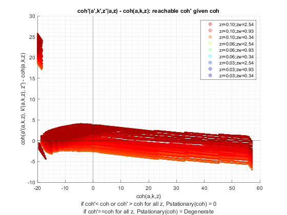 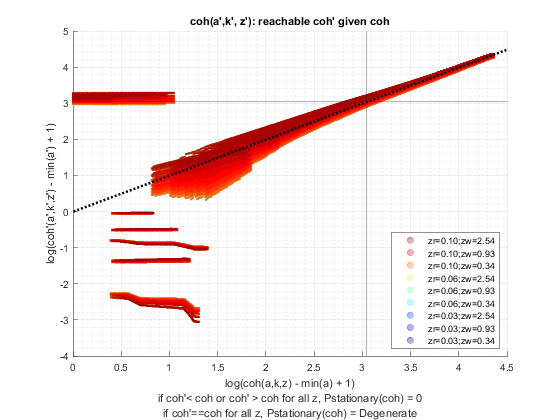 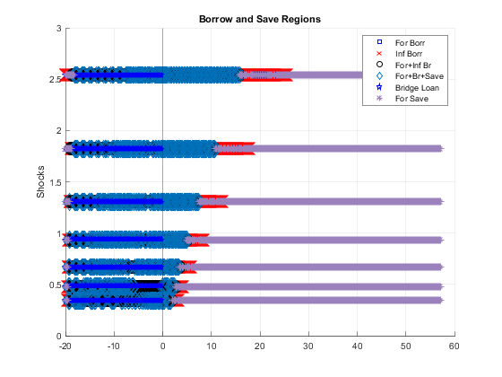 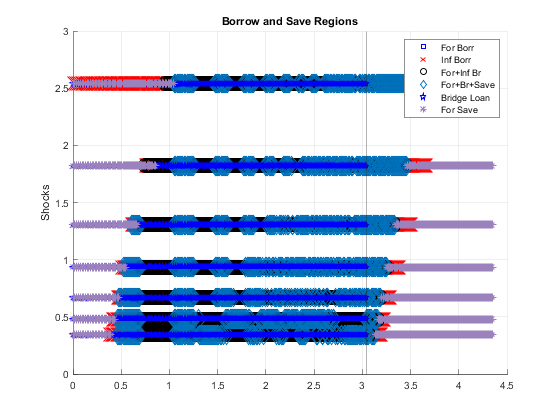 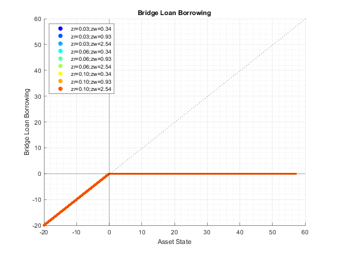 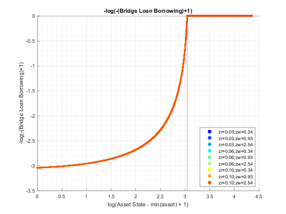 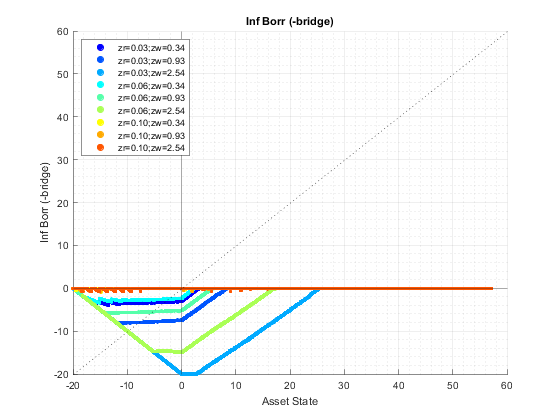 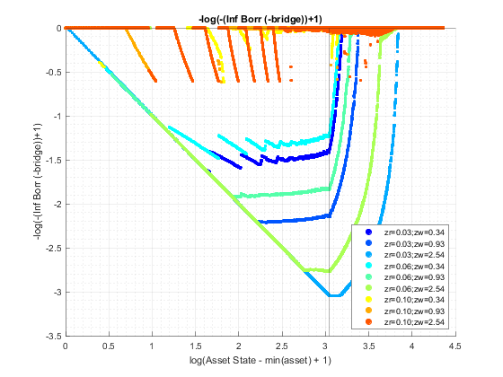 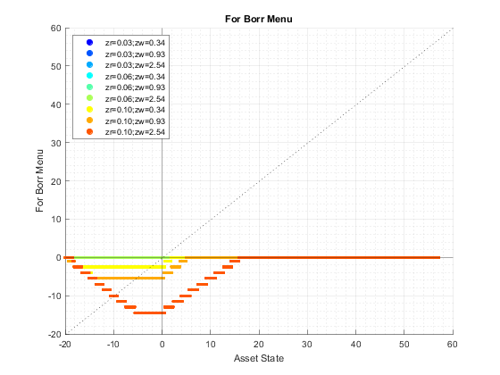 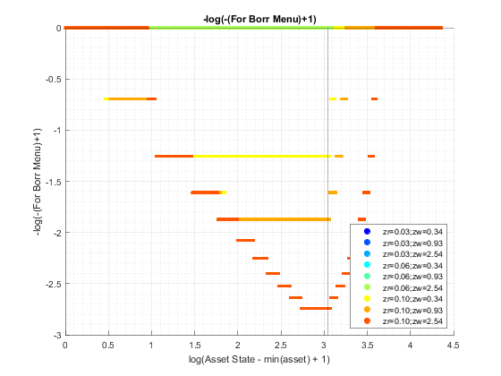 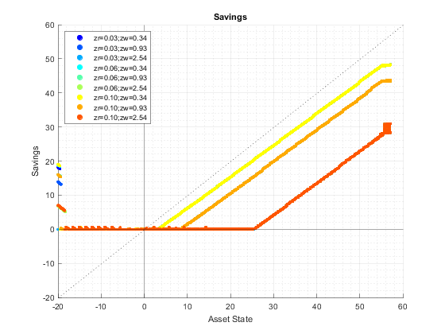 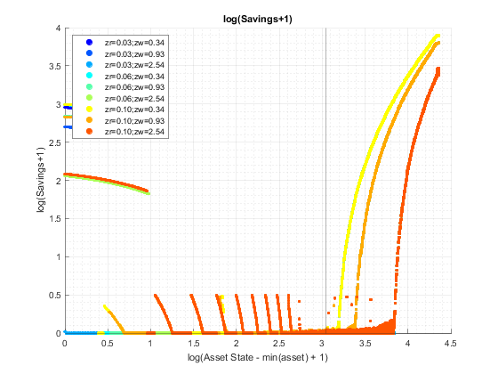 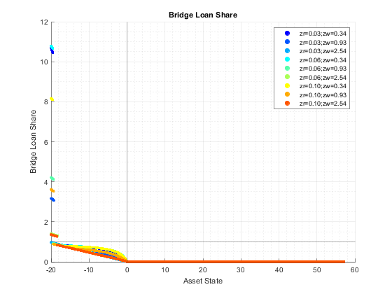 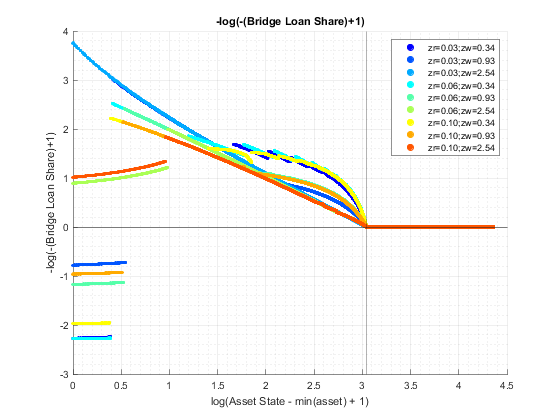 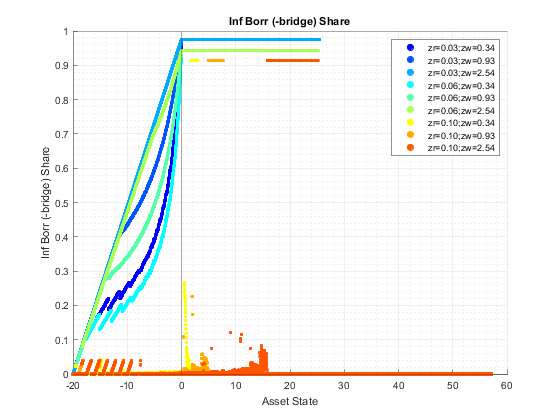 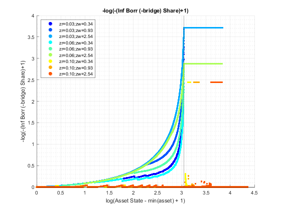 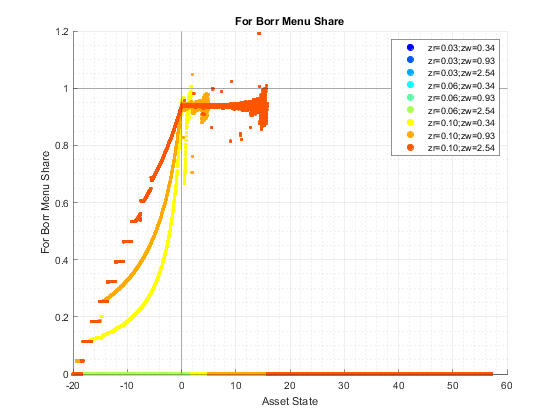 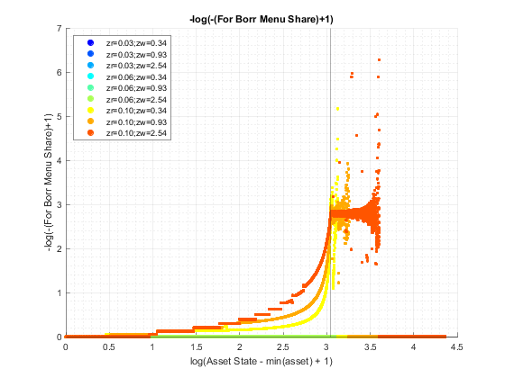 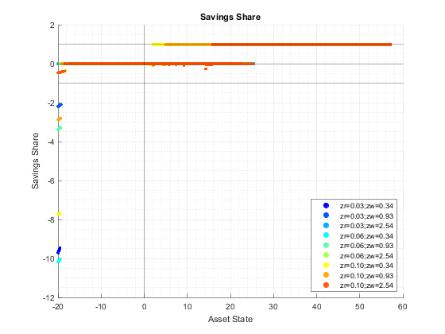 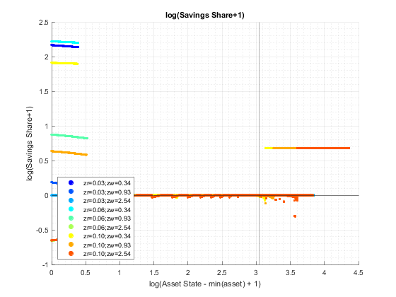